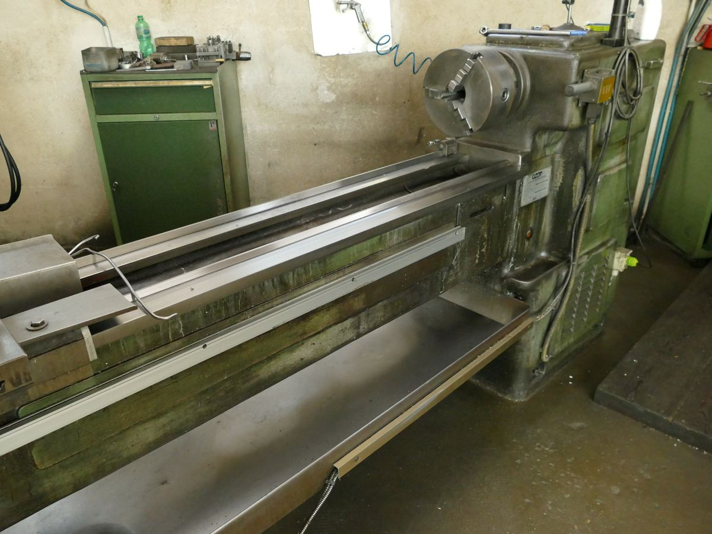

Tornitura conto terzi a Mantova
Alberi, boccole, perni e raccordi su disegno o da pezzo campione. Tornio parallelo 225 x 1500 mm, anche per un pezzo solo.
Tornitura su disegno e ricambi introvabili
Facciamo tornitura conto terzi dal 1964: alberi, boccole, perni, distanziali, raccordi filettati, bussole, pezzi cilindrici di ogni tipo, lavorati su disegno del cliente o rilevati da un pezzo campione. È la lavorazione da cui l'officina prende il nome e quella che sappiamo fare meglio.
La domanda che ci arriva più spesso è se vale la pena rivolgersi a noi per un pezzo solo. La risposta è sì: per il pezzo singolo il tornio tradizionale è spesso la via più rapida ed economica, perché non richiede programmazione né attrezzaggi dedicati. Si monta la barra e si lavora.
Il parco macchine
| Tornio parallelo | Capacità 225 × 1500 mm |
|---|---|
| Torni tradizionali | Per pezzi corti, ripassature e lavorazioni rapide |
| Strozzatrice | Cave interne per chiavette e profili |
| Trapani a colonna | Foratura, allargatura, svasatura, filettatura |
In pratica: torniamo pezzi fino a 1500 mm di lunghezza e circa 225 mm di diametro sul piatto. Per geometrie non cilindriche o tasche complesse passiamo alla fresatura CNC, spesso sullo stesso pezzo.

Quando conviene il tornio tradizionale
- Un pezzo solo. Niente programmazione: si parte e si fa.
- Un ricambio che serve subito. Linea ferma, pezzo rotto in mano: si rileva e si rifà.
- Una modifica su un pezzo esistente. Ripassare una sede, rifare una filettatura, ridurre un diametro.
- Un componente fuori produzione. Quando il costruttore non esiste più o non ha più il disegno.
Per serie ripetute e tolleranze molto strette su molti pezzi, invece, conviene il controllo numerico: te lo diciamo noi in fase di preventivo, non ti facciamo pagare la lavorazione sbagliata.
Ricambi da pezzo campione
Non serve il disegno. Se hai il pezzo — anche rotto, anche usurato — lo rileviamo con micrometri e calibri e lo rifacciamo. È il lavoro tipico che facciamo per i ricambi del settore packaging: componenti di macchine ancora in servizio ma non più supportate dal costruttore.
Cave interne con la strozzatrice
La strozzatrice esegue cave per chiavette e profili interni: è una macchina che poche officine tengono ancora, e riceviamo regolarmente richieste da aziende che hanno un solo foro da cavare. Se è questo che ti serve, chiama: quasi sempre si risolve in giornata.
Materiali e controllo
Torniamo alluminio, ottone, diversi tipi di acciaio e acciaio inox serie 3, oltre ad altri materiali su richiesta. Il controllo dimensionale si fa con micrometri, calibri tampone per le tolleranze H7 e blocchetti pianparalleli di grado 1 come riferimento: precisione al centesimo di millimetro.

I pezzi che torniamo più spesso
- Alberi e alberini — con sedi per cuscinetti, spallamenti e cave per chiavetta.
- Boccole e bussole — in ottone, bronzo o acciaio, su misura del foro esistente.
- Perni e spine — anche temprati, per sostituzioni su macchine in servizio.
- Distanziali e rondelle speciali — spessori che non esistono a catalogo.
- Raccordi e tappi filettati — filettature metriche e gas, interne ed esterne.
- Pulegge, flange e ghiere — quando il ricambio originale non è più disponibile.
Come chiedere un preventivo per la tornitura
Se hai il disegno, mandalo in PDF, DWG, DXF o STEP. Se non ce l'hai — e con i ricambi capita quasi sempre — bastano tre cose: una foto del pezzo accanto a un righello o a un calibro, le misure principali (diametri, lunghezza, passo della filettatura se c'è) e il materiale, se lo conosci. Se non sai che materiale sia, portacelo: si capisce guardandolo e lavorandolo.
Dicci anche quanti pezzi ti servono e per quando: sulle urgenze vere, se la macchina è libera, spesso si riesce a fare in giornata.
Dove siamo
Siamo a Curtatone (MN), dieci minuti da Mantova. Puoi portare il pezzo di persona negli orari di apertura, oppure mandarci il disegno via email: rispondiamo di norma entro 24 ore.
Domande frequenti
Quello che ci chiedono più spesso
Quali sono le dimensioni massime di tornitura?
Il tornio parallelo ha una capacità di 225 x 1500 mm: torniamo pezzi fino a 1500 mm di lunghezza.
Potete rifare un ricambio se non ho il disegno?
Sì. Se hai il pezzo, anche rotto o usurato, lo rileviamo con micrometri e calibri e lo rifacciamo. È il lavoro tipico che facciamo per i ricambi delle macchine da packaging.
Fate cave interne per chiavette?
Sì, con la strozzatrice per cave interne. È una lavorazione che poche officine tengono ancora in casa e la eseguiamo anche su un pezzo solo.
Richiedi un preventivo
Mandaci il disegno, ti rispondiamo in 24 ore
Allega il file PDF, DWG, DXF o STEP oppure descrivici il pezzo che ti serve: ti diciamo se possiamo farlo, in quanto tempo e a che prezzo.
- Via Cavalieri di Vittorio Veneto n.8
46010 Curtatone (MN) - Lunedì – Venerdì
8.00 – 12.00 · 14.00 – 18.00 - 0376 47593
- torbovi@virgilio.it